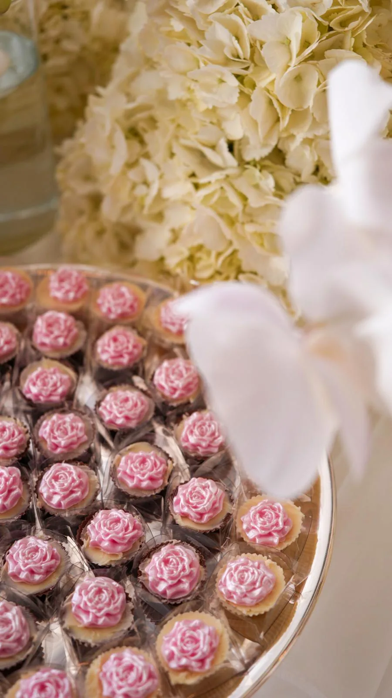
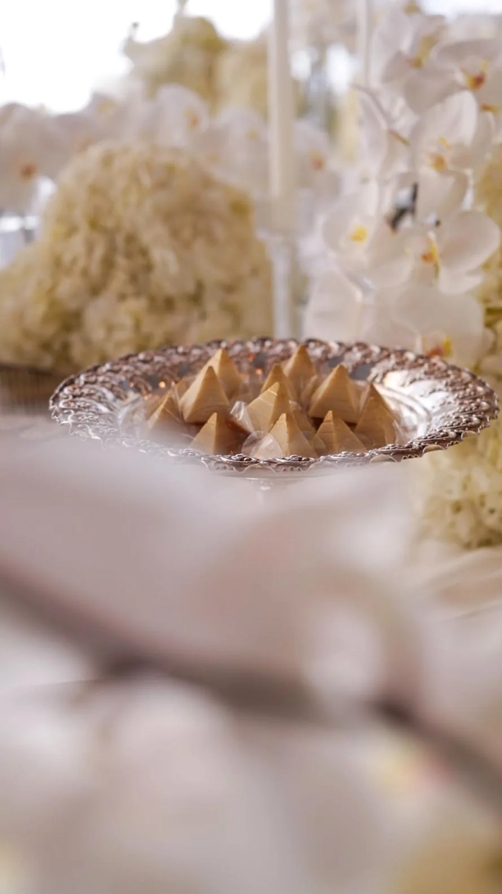

Casamentos
Mesas doces que dialogam com a paleta da decoração e a cerimónia do dia.
Para casamentos, baptizados, comunhões, aniversários e festas privadas — a Casa Clo prepara mesas doces feitas à medida da celebração: das peças e cores ao número de convidados, ao transporte e à montagem.
Cada evento começa numa boa conversa.
Pedir orçamento
Cada uma com a sua exigência própria — e cada uma merecedora de uma mesa pensada à medida.
Mesas doces que dialogam com a paleta da decoração e a cerimónia do dia.
Doces delicados, com cores suaves, monogramas e detalhes para o dia da família.
De um número redondo a uma surpresa íntima — um bolo central, uma mesa, ou as duas coisas.
Almoços, jantares, recepções em casa: doçaria que acompanha a forma de receber de cada um.
Despedidas, brindes, datas marcadas — fale connosco para perceber o que faz sentido.

Cada proposta é feita à medida, mas, em regra, uma mesa da Casa Clo combina os seguintes elementos:
Cada elemento da mesa pode ser ajustado: paletas de cor coordenadas com a decoração, monogramas com as iniciais dos noivos ou do aniversariante, formatos especiais, peças de chocolate moldadas à mão.
O processo é simples — mas com tempo suficiente para fazer cada coisa bem feita.
Conta-nos a data, o local, o número de convidados, o estilo da celebração.
Enviamos uma proposta com selecção de doces, personalização e orçamento.
Confirmação com sinal e detalhes finais (paleta, monograma, suportes).
Tudo é preparado à mão, com o tempo exigido por cada peça.
Transporte e montagem no local — a mesa fica pronta antes do convidado chegar.
Para um evento ser preparado com calma, recomendamos uma antecedência mínima de 4 a 6 semanas* — sobretudo em meses de mais procura (Maio a Setembro, Dezembro).
Para casamentos, idealmente 2 a 3 meses*. Para encomendas com peças muito personalizadas, podemos precisar de mais tempo — falamos sobre isso no momento da proposta.
* Prazos indicativos a confirmar pela Clo.



